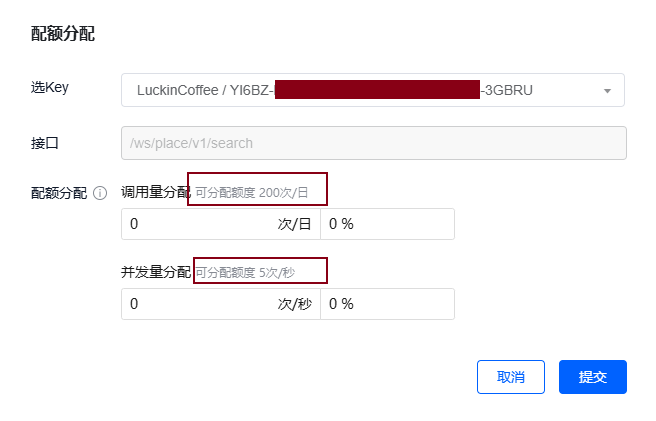

控制台 → 应用管理 → 我的应用 → 创建应用
勾选产品 Webservice API，需要使用 定位服务 - IP定位 服务和 搜索服务 - 关键字输入提示
Webservice API：腾讯地图面向企业开发者提供的地图服务，是基于HTTPS/HTTP协议的数据接口。 开发者可以使用任何客户端、服务器和开发语言，按照腾讯地图WebService API规范，按需构建HTTPS请求，并获取结果数据（目前支持JSON/JSONP方式返回）
JavaScript API GL：基于 WebGL 技术，主要面向 js 的使用
同一个账号所有的 key 共享免费额度
暂时不用的 key 不要分配额度；或者应先释放已经分配的额度
key 的配额分配
npm install --save tlbs-map-vue
import TlbsMap from "tlbs-map-vue"; app.use(TlbsMap);
<tlbs-map ref="mapRef" api-key="YI6BZ-XXXX-YYYY-ZZZZ-MK7MQ-3GBRU" :center="center" :zoom="zoom" :control="control" @click="onClick" @map_inited="onMapInited" @dragend="onDragEnd"> </tlbs-map>
const center = ref({ lat: 23.02067, lng: 113.75179 });
const zoom = ref(15);
interface Control {
scale: { position: string; className: string } | boolean;
zoom: { position: string; className: string, numVisible: boolean} | boolean;
rotation: { position: string; className: string } | boolean;
}
const control = ref({
scale: false,
zoom: false,
rotation: false
})
const onMapInited = () => {
// 地图加载完成后，可以获取地图实例，调用地图实例方法
console.log('map', mapRef.value);
console.log('map', mapRef.value.map);
console.log('map', mapRef.value.map.getCenter());
};
const onDragEnd = (e) => {
console.log('map dragend');
console.log(e);
const newCenter = mapRef.value.map.getCenter();
console.log('New center:', newCenter.lat, newCenter.lng);
center.value = { lat: newCenter.lat, lng: newCenter.lng };
}
const getMapCenter = () => {
console.log(mapRef.value.center.lat, mapRef.value.center.lng);
console.log(mapRef.value.map.getCenter());
}
<button class="pos" @click="setMapCenter"> <span class="iconfont icon-location2"></span> </button>
const setMapCenter = () => {
mapRef.value.map.setCenter({ lat: 30.91799, lng: 110.397027 });
// center.value = { lat: 23.02067, lng: 113.75179 }
}
.pos {
position: absolute;
left: 2rem;
bottom: 2rem;
background-color: rgb(255, 255, 255, 1);
width: 4rem;
height: 4rem;
display: flex;
justify-content: center;
align-items: center;
border-radius: 50%;
z-index: 1001;
}
<tlbs-multi-marker ref="markerRef" :geometries="geometries" :styles="styles" :options="options" @click="onMarkerClick"/>
const geometries = ref([
{ styleId: 'marker', position: { lat: 39.91799, lng: 116.397027 } },
])
import src from '@/assets/logo-small.png';
const styles = ref({
marker: {
width: 20,
height: 25,
anchor: { x: 10, y: 30 },
src,
},
})
const options = ref({
minZoom: 5,
maxZoom: 15,
})
{
"id": "1902176000166755090",
"title": "瑞幸咖啡(桂林文化宫店)",
"address": "广西壮族自治区桂林市秀峰区依仁路38号文化宫名品街3号楼3-1-2号门面",
"tel": "",
"category": "娱乐休闲:咖啡厅",
"type": 0,
"location": {
"lat": 25.277125,
"lng": 110.296377
},
"_distance": 1928.57,
"ad_info": {
"adcode": 450302,
"province": "广西壮族自治区",
"city": "桂林市",
"district": "秀峰区"
}
}
locs.value = res.data.data.map(item => ({
...item,
open: '08:30 - 21:30'
}))
geometries.value = res.data.data.map(item => ({
styleId: 'marker',
position: item.location,
content: item.title
}));
{
"status": 0,
"message": "Success",
"request_id": "9a7b4858d8de4ab381ce4ac4489d56f7",
"result": {
"ip": "117.183.223.153",
"location": {
"lat": 25.25235,
"lng": 110.31771
},
"ad_info": {
"nation": "中国",
"province": "广西壮族自治区",
"city": "桂林市",
"district": "七星区",
"adcode": 450305,
"nation_code": 156
}
}
}
. 添加营业时间 open 给列表数据负责在页面视图底部渲染门店信息
. 构建点标记 geometries
import { ref, onMounted, inject } from 'vue';
const axios = inject('axios');
const apiKey = 'YI6BZ-MTZW4-xxxx-yyyy-zzzz-3GBRU'
const keyword = '瑞幸咖啡';
const radius = 1000
const locs = ref([]);
const center = ref({})
const geometries = ref([])
onMounted(() => {
axios.get(`/map-api/ws/location/v1/ip?ip=&key=${apiKey}`)
.then(res => {
center.value = res.data.result.location
axios.get(`/map-api/ws/place/v1/search?boundary=nearby(${center.value.lat},${center.value.lng},${radius})&keyword=${keyword}&page_size=10&page_index=1&key=${apiKey}`)
.then(res => {
locs.value = res.data.data.map(item => ({
...item,
open: '08:30 - 21:30'
}))
geometries.value = res.data.data.map(item => ({
styleId: 'marker',
position: item.location,
content: item.title
}));
})
})
})
axios 使用依赖注入的方式使用，并进行了代理处理